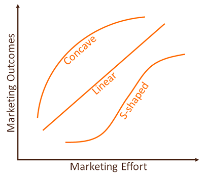
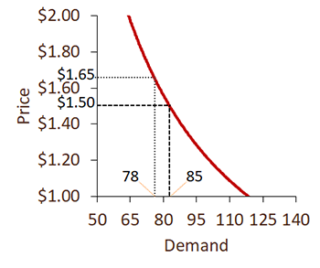
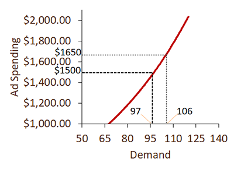
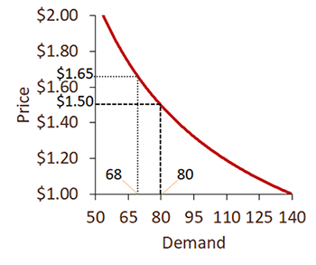
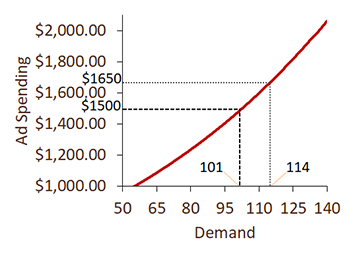
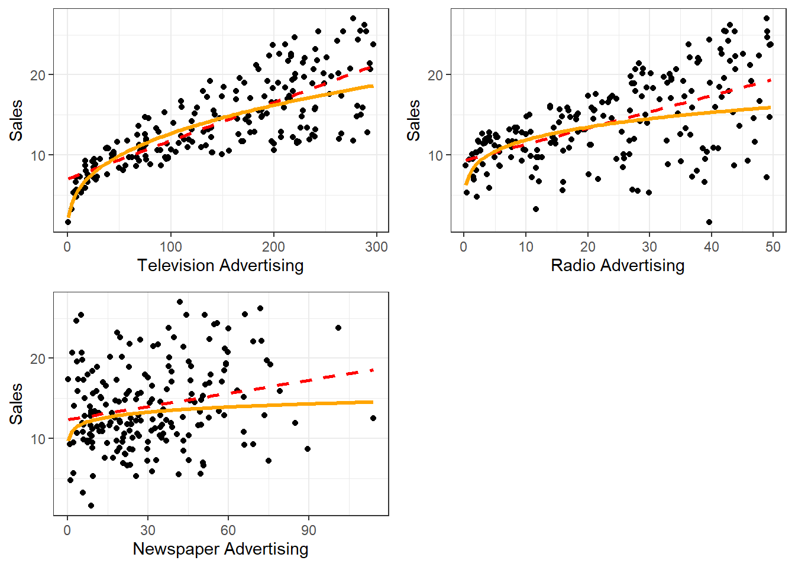
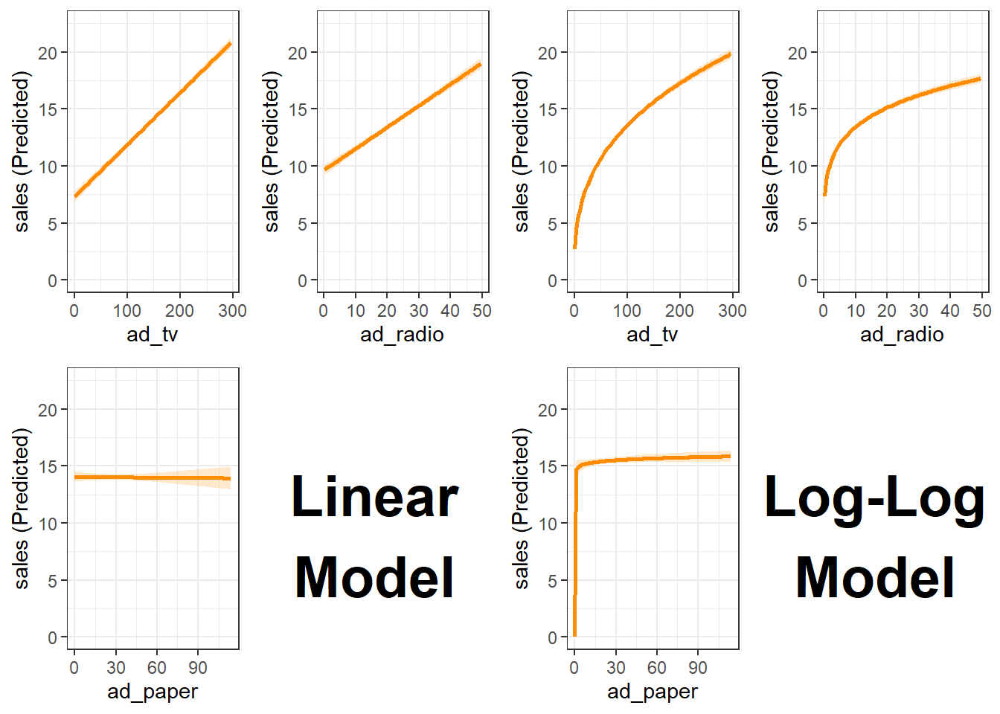
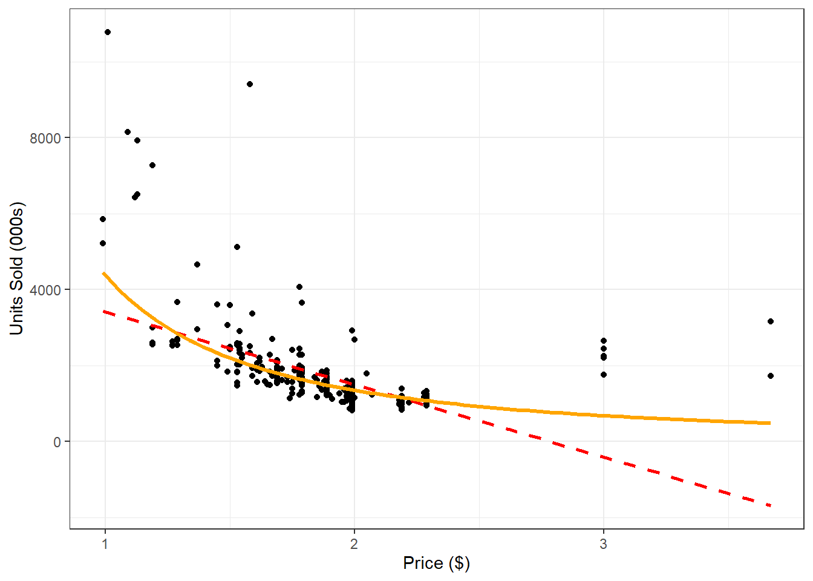
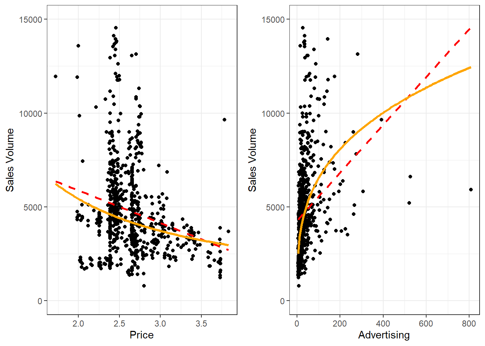

Topic 9 Marketing Mix
9.2 Overview
9.2.1 The Marketing Mix
Unique blend of product, place, promotion, and pricing strategies designed to produce mutually satisfying exchanges with a target market.
9.2.2 Market Response Models
Marketing Inputs \(\rightarrow\) The Market \(\rightarrow\) Marketing Outputs
- Marketing inputs include:
- Price
- Ad Spending
- Promotion Spending
- Marketing outputs include:
- Sales
- Market share
- Profit
9.2.4 Advantages of Response Models
- Allows marketers to identify how marketing efforts affect outcomes

- Marketers can answer resources allocation questions
- Marketers can determine relative impacts to allocate resources optimally
- Marketers can capture the effects of competitive marketing efforts
9.3 Elasticity
9.3.1 Elasticity of Demand
Consumers’ responsiveness or sensitivity to marketing changes.
\(E=\frac{\text{% Change in Demand}}{\text{% Change in Marketing}}\)
- Elastic Demand
- \(E>1\)
- Consumers sensitive to marketing changes
- Inelastic Demand
- \(E<1\)
- Consumers insensitive to marketing changes
9.3.2 Inelastic Demand
Marketing changes will not significantly affect demand for the product
- \(PED=\frac{\text{% Change in Demand}}{\text{% Change in Price}}=\frac{8.2\%}{10\%}=.82<1\)

- \(AED=\frac{\text{% Change in Demand}}{\text{% Change in Ad Spending}}=\frac{9.3\%}{10\%}=.93<1\)

9.3.3 Elastic Demand
Marketing changes will significantly affect demand for the product
- \(PED=\frac{\text{% Change in Demand}}{\text{% Change in Price}}=\frac{15\%}{10\%}=1.5>1\)

- \(AED=\frac{\text{% Change in Demand}}{\text{% Change in Ad Spending}}=\frac{12.9\%}{10\%}=1.29>1\)

9.4 Modeling Advertising Response
Problem 1: an additive model (\(sales=\alpha+\beta\times adv\)) isn’t appropriate to represent a concave relationship
Problem 2: using linear regression on a concave form (\(sales=e^\alpha adv^\beta\)) won’t work
Solution: transform the equation using the natural log (\(ln(sales)=\alpha+\beta\times ln(adv)\))
Result: allows the use of linear regression to model the concave relationship
\(ln(sales)=\alpha+\beta\times ln(adv)\)
- \(\alpha\) is the \(ln(sales)\) when \(adv\approx0\)
- \(e^\alpha\) is the \(sales\) when \(adv\approx0\)
- \(\beta\) is the effect on sales for a \(1\%\) increase in \(adv\)
- In other words, \(\beta\) is the advertising elasticity of demand
- \(\beta\) should be positive
- To calculate the effect on \(sales\) for an \(x\%\) increase, calculate \(1.x^\beta -1\)
9.5 Modeling Price Response
Problem 1: an additive model (\(sales=\alpha+\beta\times price\)) isn’t appropriate to represent a concave relationship
Problem 2: using linear regression on a concave form (\(sales=e^\alpha price^\beta\)) won’t work
Solution: transform the equation using the natural log (\(ln(sales)=\alpha+\beta\times ln(price)\))
Result: allows the use of linear regression to model the concave relationship
\(ln(sales)=\alpha+\beta\times ln(price)\)
- \(\alpha\) is the \(ln(sales)\) when \(price\approx0\)
- \(e^\alpha\) is the \(sales\) when \(price\approx0\)
- \(\beta\) is the effect on sales for a \(1\%\) increase in \(price\)
- In other words, \(\beta\) is the price elasticity of demand
- \(\beta\) should be negative
- To calculate the effect on \(sales\) for an \(x\%\) increase, calculate \(1.x^\beta -1\)
9.6 Modeling Advertising Response Example
9.6.1 Data
- Advertising and Sales data for 200 firms
- DV: Sales (in millions), \(sales\)
- IVs:
- TV Advertising (in 000s), \(tv\)
- Radio Advertising (in 000s), \(radio\)
- Paper Advertising (in 000s), \(paper\)
- Model: \(sales=e^\alpha tv^{\beta_1} radio^{\beta_2} paper^{\beta_3}\)
9.6.2 Scatterplots
- Fit lines show the sales and advertising relationships are not linear
Figure 9.1: Advertising-Sales Scatterplots
Code
logtv <- lm(log(sales)~log(ad_tv), data=advtsales)
lograd <- lm(log(sales)~log(ad_radio), data=advtsales)
logpap <- lm(log(sales)~log(ad_paper), data=advtsales)
p1 <- advtsales %>% ggplot(aes(x=ad_tv, y=sales)) +
geom_point() +
geom_smooth(method="lm", se=FALSE, linewidth=1, color="red", linetype="dashed") +
geom_function(fun = function(x) exp(coef(logtv)[1] + coef(logtv)[2]*log(x)),
color = "orange",linewidth = 1.2) +
labs(x="Television Advertising", y="Sales") +
theme_bw()
p2 <- advtsales %>% ggplot(aes(x=ad_radio, y=sales)) +
geom_point() +
geom_smooth(method="lm", se=FALSE, linewidth=1, color="red", linetype="dashed") +
geom_function(fun = function(x) exp(coef(lograd)[1] + coef(lograd)[2]*log(x)),
color = "orange",linewidth = 1.2) +
labs(x="Radio Advertising", y="Sales") +
theme_bw()
p3 <- advtsales %>% ggplot(aes(x=ad_paper, y=sales)) +
geom_point() +
geom_smooth(method="lm", se=FALSE, linewidth=1, color="red", linetype="dashed") +
geom_function(fun = function(x) exp(coef(logpap)[1] + coef(logpap)[2]*log(x)),
color = "orange",linewidth = 1.2) +
labs(x="Newspaper Advertising", y="Sales") +
theme_bw()
cowplot::plot_grid(p1,p2,p3, nrow=2)
9.6.3 Estimation
- Transform data to use the multiplicative model
- \(sales=e^\alpha tv^{\beta_1} radio^{\beta_2} paper^{\beta_3}\)
\(\rightarrow\) Take natural log of both sides - \(ln(sales)=ln(e^\alpha tv^{\beta_1} radio^{\beta_2} paper^{\beta_3})\)
\(ln(sales)=\alpha+\beta_1ln(tv)+\beta_2ln(radio)+\beta_3ln(paper)\) - NOTE:
- \(ln(x^y)=y\times ln(x)\)
- \(ln(x\times y)=ln(x)+ln(y)\)
- \(ln(e)=1\)
- \(sales=e^\alpha tv^{\beta_1} radio^{\beta_2} paper^{\beta_3}\)
9.6.4 Results
Table 9.1: Advertising Response Results
Code
| F(3,196) | 903.502 |
| R² | 0.933 |
| Adj. R² | 0.932 |
| Est. | S.E. | t val. | p | |
|---|---|---|---|---|
| (Intercept) | 0.401 | 0.046 | 8.759 | 0.000 |
| log(ad_tv) | 0.350 | 0.008 | 45.689 | 0.000 |
| log(ad_radio) | 0.172 | 0.008 | 22.716 | 0.000 |
| log(ad_paper) | 0.016 | 0.008 | 1.982 | 0.049 |
| Standard errors: OLS |
- Model is significant (\(p<.001\)) and explains about \(93\%\) of the variance
- All three types of advertising are significant and in the expected direction
- Advertising elasticities:
- Television: \(.350\) (inelastic)
- Radio: \(.172\) (inelastic)
- Paper: \(.016\) (inelastic)
- We’ve seen this data before…
- Regular model: \(sales=\alpha+\beta_1ad\_tv+\beta_2ad\_radio+\beta_3ad\_paper\)
- Log-Log model: \(ln(sales)=\alpha+\beta_1ln(ad\_tv)+\beta_2ln(ad\_radio)+\beta_3ln(ad\_paper)\)
Table 9.2: Linear vs. Log-Log Model Comparison
Code
| Regular | Log-Log | |
|---|---|---|
| (Intercept) | 2.923 | 0.401 |
| ad_tv | 0.046 | 0.350 |
| ad_radio | 0.189 | 0.172 |
| ad_paper | -0.001 | 0.016 |
| Num.Obs. | 200 | 200 |
| R2 | 0.898 | 0.933 |
| BIC | 798.1 | 726.9 |
| F | 572.768 | 903.502 |
- Which model is better? How do you know?
- The log-log model explains more of the variation in the dependent variable
Figure 9.2: Linear vs. Log-Log Margin Plot Comparison
Code
l1 <- easy_mp(adresp, "ad_tv")$plot + scale_y_continuous(limits=c(0,22.5))
l2 <- easy_mp(adresp, "ad_radio")$plot + scale_y_continuous(limits=c(0,22.5))
l3 <- easy_mp(adresp, "ad_paper")$plot + scale_y_continuous(limits=c(0,22.5))
l4 <- ggplot() + theme_void() +
annotate("text", x = 0.5, y = 0.5, label = "Log-Log\nModel",
size = 10, fontface = "bold")
pl <- cowplot::plot_grid(l1, l2, l3, l4, ncol=2)
r1 <- easy_mp(adresp_reg, "ad_tv")$plot + scale_y_continuous(limits=c(0,22.5))
r2 <- easy_mp(adresp_reg, "ad_radio")$plot + scale_y_continuous(limits=c(0,22.5))
r3 <- easy_mp(adresp_reg, "ad_paper")$plot + scale_y_continuous(limits=c(0,22.5))
r4 <- ggplot() + theme_void() +
annotate("text", x = 0.5, y = 0.5, label = "Linear\nModel",
size = 10, fontface = "bold")
pr <- cowplot::plot_grid(r1, r2, r3, r4, ncol=2)
cowplot::plot_grid(pr,pl, nrow=1)
9.7 Modeling Price Response Example
9.7.1 Data
- Price and Sales data for one cereal over 380 weeks
- DV: Units sold (in 000s), \(sold\)
- IV: Price (in dollars), \(price\)
- Model: \(sold=e^\alpha price^\beta\)
9.7.2 Scatterplot
- Fit line show the units sold and price relationship is not linear
Figure 9.3: Price-Units Sold Scatterplot
Code
logprice <- lm(log(sold)~log(price), data=cereal)
cereal %>% ggplot(aes(x=price, y=sold)) +
geom_point() +
geom_smooth(method="lm", se=FALSE, linewidth=1, color="red", linetype="dashed") +
geom_function(fun = function(x) exp(coef(logprice)[1] + coef(logprice)[2]*log(x)),
color = "orange",linewidth = 1.2) +
labs(x="Price ($)", y="Units Sold (000s)") +
theme_bw()
9.7.3 Estimation
- Transform data to use the multiplicative model
- \(sold=e^\alpha price^\beta\)
\(\rightarrow\) Take natural log of both sides - \(ln(sold)=ln(e^\alpha price^\beta)\)
\(ln(sold)=\alpha+\beta ln(price)\) - NOTE:
- \(ln(x^y)=y\times ln(x)\)
- \(ln(x\times y)=ln(x)+ln(y)\)
- \(ln(e)=1\)
- \(sold=e^\alpha price^\beta\)
9.7.4 Results
Table 9.3: Price Response Results| F(1,378) | 344.706 |
| R² | 0.477 |
| Adj. R² | 0.476 |
| Est. | S.E. | t val. | p | |
|---|---|---|---|---|
| (Intercept) | 8.384 | 0.060 | 139.752 | 0.000 |
| log(price) | -1.696 | 0.091 | -18.566 | 0.000 |
| Standard errors: OLS |
- Model is significant (\(p<.001\)) and explains about \(48\%\) of the variance
- Price is significant and in the expected direction
- Price elasticity: \(-1.696\) (elastic)
9.8 Modeling Price and Advertising Response Example
9.8.1 Data
- Price, Advertising, and Sales data at Kroger for a cheese product across 10 cities over about 6 years
- DV: Sales volume, \(vol\)
- IVs:
- Price (in dollars), \(price\)
- Advertising spending index, \(adv\)
- Price (in dollars), \(price\)
- Model: \(vol=e^\alpha price^{\beta_1} adv^{\beta_2}\)
9.8.2 Scatterplot
- Fit lines show the volume relationships with price and advertising are not linear
Figure 9.4: Price and Advertising Scatterplots with Sales Volume
Code
# Filter data for Kroger only
cheese <- cheese %>% filter(store=="KROGER")
logpr2 <- lm(log(vol)~log(price), data=cheese)
logad2 <- lm(log(vol)~log(adv), data=cheese)
p1 <- cheese %>% ggplot(aes(x=price, y=vol)) +
geom_point() +
geom_smooth(method="lm", se=FALSE, linewidth=1, color="red", linetype="dashed") +
geom_function(fun = function(x) exp(coef(logpr2)[1] + coef(logpr2)[2]*log(x)),
color = "orange",linewidth = 1.2) +
labs(x="Price", y="Sales Volume") +
scale_y_continuous(limits=c(0,15000)) +
theme_bw()
p2 <- cheese %>% ggplot(aes(x=adv, y=vol)) +
geom_point() +
geom_smooth(method="lm", se=FALSE, linewidth=1, color="red", linetype="dashed") +
geom_function(fun = function(x) exp(coef(logad2)[1] + coef(logad2)[2]*log(x)),
color = "orange",linewidth = 1.2) +
labs(x="Advertising", y="Sales Volume") +
scale_y_continuous(limits=c(0,15000)) +
theme_bw()
cowplot::plot_grid(p1,p2, ncol=2)
9.8.3 Estimation
- Transform data to use the multiplicative model
- \(vol=e^\alpha price^{\beta_1} adv^{\beta_2}\)$ Take natural log of both sides
- \(ln(vol)=ln(e^\alpha price^{\beta_1} adv^{\beta_2})\)
\(ln(sold)=\alpha+\beta_1 ln(price)+\beta_2 ln(adv)\) - NOTE:
- \(ln(x^y)=y\times ln(x)\)
- \(ln(x\times y)=ln(x)+ln(y)\)
- \(ln(e)=1\)
9.8.4 Results
Table 9.4: Price and Advertising Response Results
Code
| F(2,703) | 163.732 |
| R² | 0.318 |
| Adj. R² | 0.316 |
| Est. | S.E. | t val. | p | |
|---|---|---|---|---|
| (Intercept) | 8.094 | 0.139 | 58.052 | 0.000 |
| log(price) | -0.726 | 0.125 | -5.812 | 0.000 |
| log(adv) | 0.299 | 0.018 | 16.491 | 0.000 |
| Standard errors: OLS |
- Model is significant (\(p<.001\)) and explains about \(32\%\) of the variance
- Both advertising and price are significant and in the expected direction
- Elasticities:
- Price: \(-.726\) (inelastic)
- Advertising: \(.299\) (inelastic)